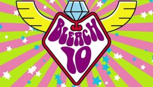

Episódios Favoritos
Episódio 1: "Pilot"

O começo da jornada de Ichigo Kurosaki como Shinigami.
Episódio 10: "Fighting the Enemy"
Ichigo enfrenta poderosos inimigos em uma batalha intensa.
Episódio 20: "The Final Stand"
A batalha final contra um dos vilões mais poderosos.